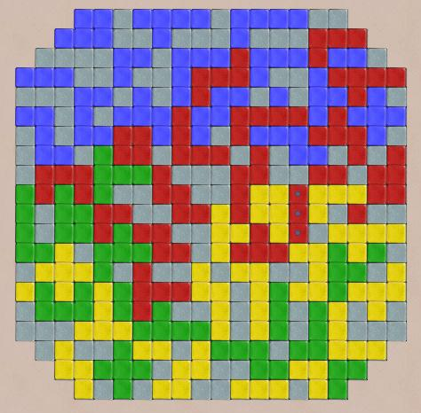

Diagonal
Blocks and Diagonal Blocks Duo
Diagonal Blocks is
a polyomino game which uses the full set of polyominos of size up to 5,
and a diagonal connection rule. The board size varies with
the number of players, and the corners are removed to make the board
only slightly larger than the total size of the tiles. In the
3 player variant, the starting squares form an equilateral triangle.
Rules:
The first move must
cover one of the starting squares, which are darker gray colored.
Subsequent moves must connect at a corner with some previously played
piece the same color, and must not be directly adjacent to any piece
the same color.
Winner:
is the player to cover the largest area.
Robots:
Not too bright, but adequate for teaching the game.
|

|